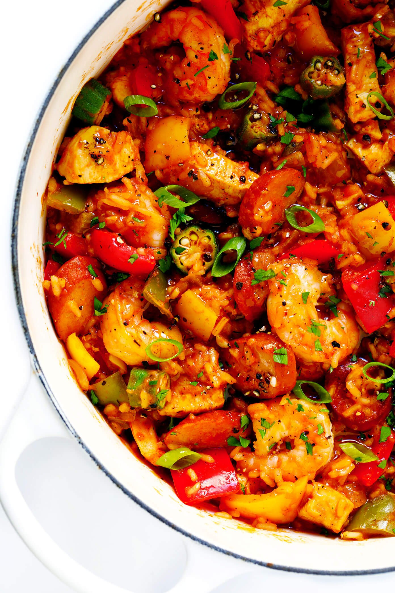

Description
You've probably hear of jambalaya before, right?
Well, you've never heard of JAMbalaya!
Its OK.
Ingredients
- 3 tablespoons olive oil, divided
- 2 boneless skinless chicken breasts, cut into bite-sized pieces
- 1 pound andouille sausage, thinly sliced into rounds
- 3 small bell peppers, cored and diced (I used a yellow, red and green bell pepper)
- 2 ribs celery, diced
- 1 jalapeño pepper, seeded and finely chopped
- 1 white onion, diced
- 4 cloves garlic, peeled and minced
- 1 (14-ounce) can crushed tomatoes
- 3–4 cups chicken stock
- 1 1/2 cups uncooked long grain white rice
- 2 tablespoons Cajun seasoning or Creole seasoning
- 1 teaspoon dried thyme, crushed
- 1/4 teaspoon cayenne pepper
- 1 bay leaf
- 1 pound raw large shrimp peeled and deveined
- 1 cup thinly-sliced okra*
- Kosher salt and freshly-cracked black pepper, to taste
- optional garnishes: chopped fresh parsley, thinly-sliced green onions, hot sauce
Steps
- Heat 1 tablespoon oil in a stock pot (or a very large, deep sauté pan) over medium-high heat.
Add the chicken and sausage and sauté for 5-7 minutes, stirring occasionally, until
the chicken is cooked through and the sausage is lightly browned. Transfer to a clean
plate and set aside.
- Add the remaining 2 tablespoons oil to the stock pot. Add bell peppers, celery, jalapeño,
onion and garlic. Sauté for 6 minutes, stirring occasionally, until the onions are
softened.
- Add the crushed tomatoes, chicken stock, rice, Cajun seasoning, thyme, cayenne, bay leaf, and
stir to combine. Continue cooking until the mixture reaches a simmer. Then reduce heat to
medium-low, cover and simmer for about 25-30 minutes, or until the rice is nearly cooked
through, stirring every 5 minutes or so along the way so that the rice does not burn.
- Add the shrimp, okra, and stir to combine. Continue to simmer, stirring occasionally,
until the shrimp are cooked through and pink. Stir in the chicken and sausage, and
remove and discard the bay leaf.
- Taste season the jambalaya with salt, pepper, and additional Cajun seasoning if needed.
(I typically add about 2 teaspoons salt and 1/2 teaspoon pepper.) Remove from heat.
- Serve warm with your desired garnishes. Or refrigerate and store in a sealed container
for up to 3 days.